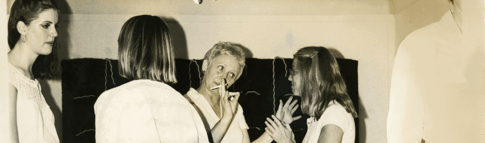
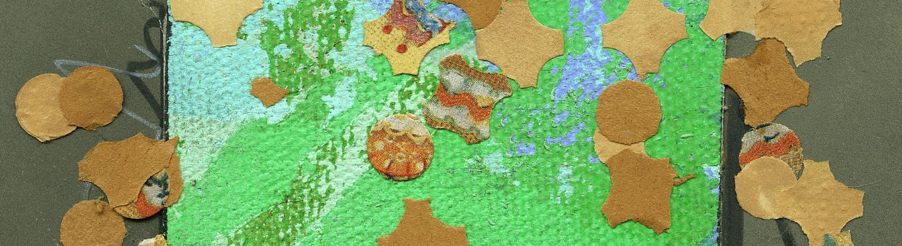

The Dallas Women’s Gallery Project is composed of video oral histories, an ephemera database, an interactive timeline, essays, and resources.

Watch Video Oral History interviews with DW artists, directors, and community members.

Browse, filter, and search the Art & Ephemera Database for artifacts from institutional and private collections that document DW Gallery events.
Explore the Interactive Timeline to see DW Gallery activities, 1975–1988, reconstructed from evidence in the Art & Ephemera Database.
_7_1.png/0,1000,2059,250/500,/0/default.png)

Coming in Spring 2026
Uchacz, Tianna Helena, and Richard Serrano. DW Gallery Project. November 1, 2025. Accessed [date]. https://texasartproject.org/dwg.